The UNet architecture can be decomposed into three components: a left encoder path that applies
a sequence of downsampling blocks to shrink spatial resolution and expand channel dimensionality,
a compact middle block that aggregates global context, and a right decoder path that restores
spatial resolution through upsampling blocks. Skip connections transmit feature maps from each
encoder stage to the matching decoder stage, ensuring that coarse semantic structure from deeper
layers is combined with fine spatial detail preserved in earlier layers.
In the MNIST setting, this template is instantiated at three resolution levels. The set of operations are,
convolutions with Batch Normalization and GELU activations; strided convolutions for
downsampling; transposed convolutions for upsampling; flattening via average pooling; and
channel-wise concatenation, which then are composed into the ConvBlock, DownBlock, and
UpBlock modules shown below. During Part 1, this UNet functions as a single-step
denoiser: a clean 1×28×28 MNIST image is corrupted by Gaussian noise with standard deviation σ, and
the network is trained with an MSE objective to predict the clean digit in a single forward pass.
Varying the corruption level provides a controlled way to examine the limits of the model. Small
σ produces mildly perturbed digits, whereas large σ yields images that approach pure noise. This
parameter sweeps out the regimes in which recognizable structure persists and the regimes in which
the network must effectively infer the digit from highly degraded evidence.
1.2 Using the UNet to Train a Denoiser
The first visualization surveys how a fixed handwritten digit responds to increasing noise levels.
As σ moves from 0.0 to 1.0, sparse perturbations evolve into dense, irregular patterns that
progressively obscure stroke geometry. Mid-range σ values maintain enough brightness structure for
the digit to remain identifiable, whereas high σ values leave only faint residual cues. This
sequence delineates the threshold beyond which the representation no longer contains usable
information.
Noise-only σ sweep: rising noise gradually eliminates stroke structure until the image becomes
visually indistinguishable from Gaussian noise.
A more detailed study compares the noisy input, the UNet’s reconstruction, and a pixelwise
absolute-error heatmap at each σ. When σ is small, the reconstruction nearly matches the clean
digit, and the error map is almost blank. At moderate σ, the network restores a coherent and
well-formed seven even though the input is heavily degraded, with remaining error concentrated
around stroke boundaries where handwritten digits naturally vary. At the highest σ levels,
reconstruction becomes increasingly speculative, and the error maps broaden to reflect the loss of
reliable structure in the input.
σ-sweep showing noisy input, denoised output, and reconstruction error. The UNet performs
reliably while structural cues remain, but errors intensify as σ removes nearly all evidence of
the underlying digit.
The final visualization extends this analysis from a single digit to a small batch of digits. For
each σ, columns correspond to different MNIST examples, while rows show aligned views such as
noisy inputs and their corresponding denoised outputs. At low σ the three rows are nearly
indistinguishable from the clean targets, confirming that mild corruption is corrected with
minimal distortion. As σ increases, the noisy row becomes dominated by noise, yet the denoised
row continues to display sharp and legible digits across a range of classes, illustrating that the
behavior observed on the single digit seven generalizes to a broader subset of the dataset.
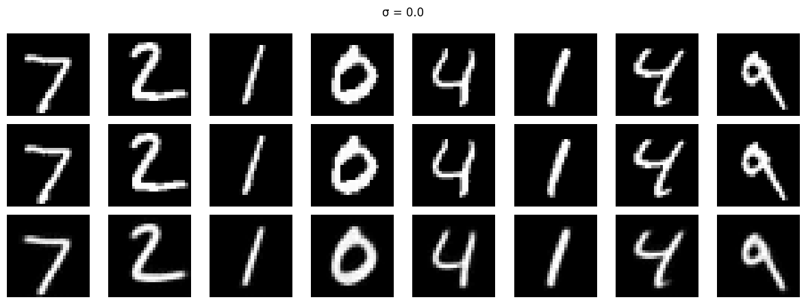
Multi-digit σ-sweep: across several digit classes, the UNet consistently recovers clean,
class-consistent shapes from increasingly corrupted inputs, mirroring the trends observed in
the single-digit analysis.
1.2.2 Out-of-Distribution Noise Levels
The denoiser is trained at a single noise level, σ = 0.5, but then evaluated across the full
range σ ∈ [0.0, 1.0]. Several aggregated statistics summarize how performance degrades as the
test noise moves away from the training regime and how the network allocates its corrections
across the image plane.
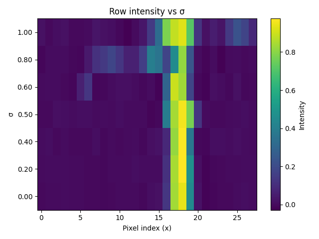
Row intensity vs σ: a central scanline through the denoised digits remains sharply localized at
low σ and gradually broadens as noise increases, indicating growing uncertainty in stroke
placement.
The class-wise MSE curves provide a complementary view. For each digit class, the test MSE rises
monotonically with σ, producing a family of smooth, upward-sloping curves. Simple digits with a
single dominant stroke, such as the digit one, incur the lowest error across the range, while more complex
shapes show higher error, especially at large σ. This pattern reflects the fact that recovering a
simple vertical stroke from noise is easier than reconstructing multi-stroke digits whose
structure is more sensitive to small perturbations.
Class-wise MSE vs σ: errors increase smoothly with noise level, with simple digits like 1
remaining easiest to reconstruct and more complex digits accumulating higher error at large σ.
Distributional and spectral analyses tell a consistent story. Histograms of pixel intensities
show that the noisy images spread mass across a broad range of gray levels, while the denoised
outputs return mass to the sharp bimodal structure characteristic of clean MNIST digits
(dominant peaks near 0 and 1). In the Fourier domain, magnitude spectra and radial profiles
reveal that noise injects excess high-frequency energy, whereas the denoiser restores a spectrum
closely aligned with the clean reference by suppressing high frequencies and preserving
low-frequency content that encodes overall digit shape.
Pixel intensity distributions: noise flattens the histogram, while the denoised outputs recover
a distribution that closely matches the clean digits with mass concentrated near background and
stroke intensities.
2D frequency spectra: noisy images exhibit amplified high-frequency content, whereas denoised
images suppress these components and restore a spectrum dominated by low frequencies, similar
to the clean digits.
Radial frequency profiles: the noisy curve sits above the clean baseline at high spatial
frequencies, while the denoised curve tracks the clean profile, confirming that the UNet
behaves as a data-aware low-pass filter.
Therefore, the internal representation learned by the network is visualized by projecting
bottleneck features onto their first two principal components. Points corresponding to different
digit classes form overlapping but structured clusters, with certain digits (notably “1”) forming
well-separated lobes. Together with a panel contrasting the lowest- and highest-error examples,
this view shows that the UNet organizes digits into a meaningful latent space: canonical,
easy-to-read instances concentrate in regions where the model reconstructs accurately, while
atypical handwriting styles occupy regions associated with larger reconstruction error.
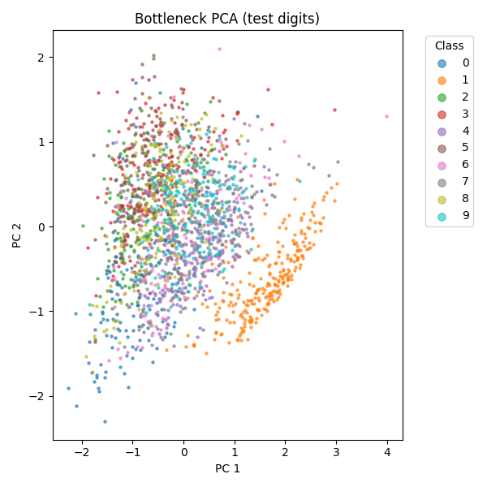
Bottleneck PCA colored by digit label: digits cluster by class in the latent space, with
well-formed examples occupying dense regions and more ambiguous handwriting pushed toward the
periphery.
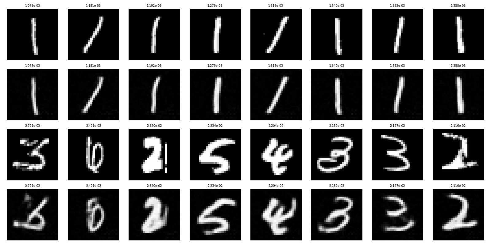
Best- and worst-case reconstructions at σ = 0.5: simple, cleanly written digits yield very
small errors, while atypical shapes and ambiguous strokes produce noticeably larger
reconstruction discrepancies.
By epoch 5, this behavior persists. The denoised digits retain the same prototype-like form
seen at epoch 1, reflecting the limitations of pure-noise inputs: without class-specific
information in the observation, the model can sharpen the global silhouette only modestly and
cannot recover fine details unique to each target digit.
Pure-noise denoiser after epoch 1: outputs are diffuse, digit-shaped blobs that move the
prediction away from white noise but remain only weakly tied to the underlying class labels.
By epoch 5, the bottom row remains qualitatively unchanged. The predictions are still
smooth, averaged digit prototypes that do not track the identity or fine stroke patterns of
the targets in the top row; at most, contrast and overall mass are slightly adjusted. This
stagnation reflects the limitation of the pure-noise setting: because the input carries no
information about which digit should be produced, the network can only learn a generic digit
prior rather than accurate, sample-specific reconstructions.
Pure-noise denoiser after epoch 5: outputs remain blurry, class-agnostic prototype
digits, showing little visible improvement over epoch 1 and confirming that further
training cannot recover per-sample detail from noise-only inputs.
Averaging the absolute reconstruction error pixelwise over the entire test set at σ = 0.5
reveals a spatial structure that closely resembles a blurred template of the MNIST manifold.
Background regions, which are almost always blank, exhibit near-zero error. In contrast, the
central vertical band and surrounding arcs, where strokes from many digits tend to pass, show
systematically elevated error. This pattern indicates that the network has effectively learned
a per-pixel average over the dataset: pixels that are consistently off are reconstructed with
high confidence, whereas pixels that sometimes contain a stroke incur unavoidable residual
error. The blurred “average digit” visible in the heatmap explains why, even by epoch 5 in
the pure-noise setting, the model converges to soft prototype digits rather than sharpening to
sample-specific reconstructions.
Mean absolute error at σ = 0.5: errors concentrate in stroke-bearing regions and trace out a
blurred digit template, showing that the network behaves like a per-pixel average over the
MNIST dataset and matching the prototype-like outputs observed for pure-noise inputs even
after epoch 5.
2.2–2.3 Training and Sampling from the Time-Conditioned UNet
The time-conditioned UNet is trained on MNIST to predict the instantaneous update that moves a
noisy digit a little closer to the data manifold. Each training step draws a clean digit,
samples a random noise level, corrupts the image, and asks the network to predict the
corresponding flow. The model uses the same convolutional backbone as in Part 1, with an
additional branch that embeds the scalar timestep and injects it into the feature maps. Training
with Adam, a learning rate of 0.01, batch size 128, and an exponentially decaying schedule over
15 epochs produces a loss curve with a steep initial drop followed by a long, flat tail,
indicating rapid learning of a coarse flow field and then gradual refinement of small residual
errors.
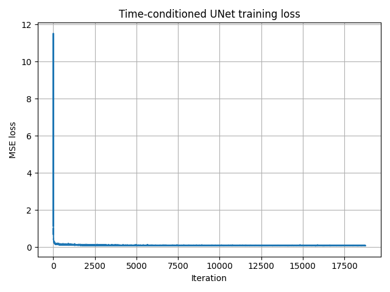
Training loss for the time-conditioned UNet over 15 epochs. The loss collapses within the
first few hundred iterations, then decreases slowly as the learned flow is polished with
additional passes through the data.
Sampling uses this learned flow for iterative denoising. Starting from pure Gaussian noise,
the sampler marches through a sequence of timesteps, applying the UNet at each step to nudge
samples toward the digit manifold. The grids below show independent samples at epoch 1 and
epoch 20 using the same sampling schedule. After one epoch, most digits are only partially
formed: strokes are broken, many shapes are ambiguous, and some samples resemble textured
noise more than digits. By epoch 20, the samples have somewhat sharp, continuous strokes, clear
digit identities, and far fewer artifacts. The closley resembles the behavior of the loss
curve: once the coarse flow has been learned, continued training primarily improves local
geometry and stroke-level detail.
Epoch 1 samples
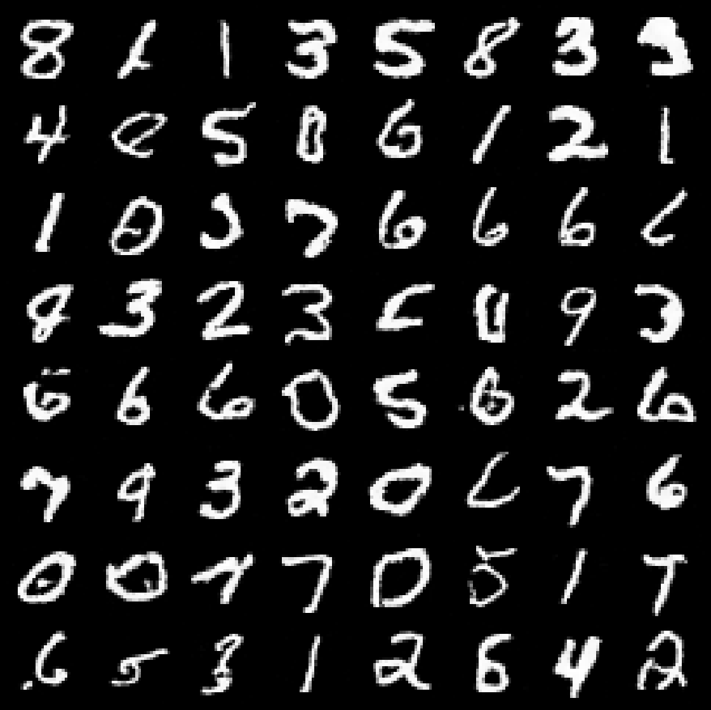
Epoch 20 samples
Samples from the time-conditioned UNet early and late in training. After a single epoch the
model produces noisy, fragmented digits, while by epoch 15 the same sampler generates
clean, class-consistent digits with well-defined strokes.
The illsutration below demonstrates the evolution more clearly by tracking a fixed batch of noise seeds
across epochs. Early in training, trajectories wander and often collapse to distorted or
inconsistent shapes. As the flow improves, the same seeds converge reliably to stable,
recognizable digits, showing how the learned dynamics gradually carve out the MNIST
manifold from an initially random latent space.
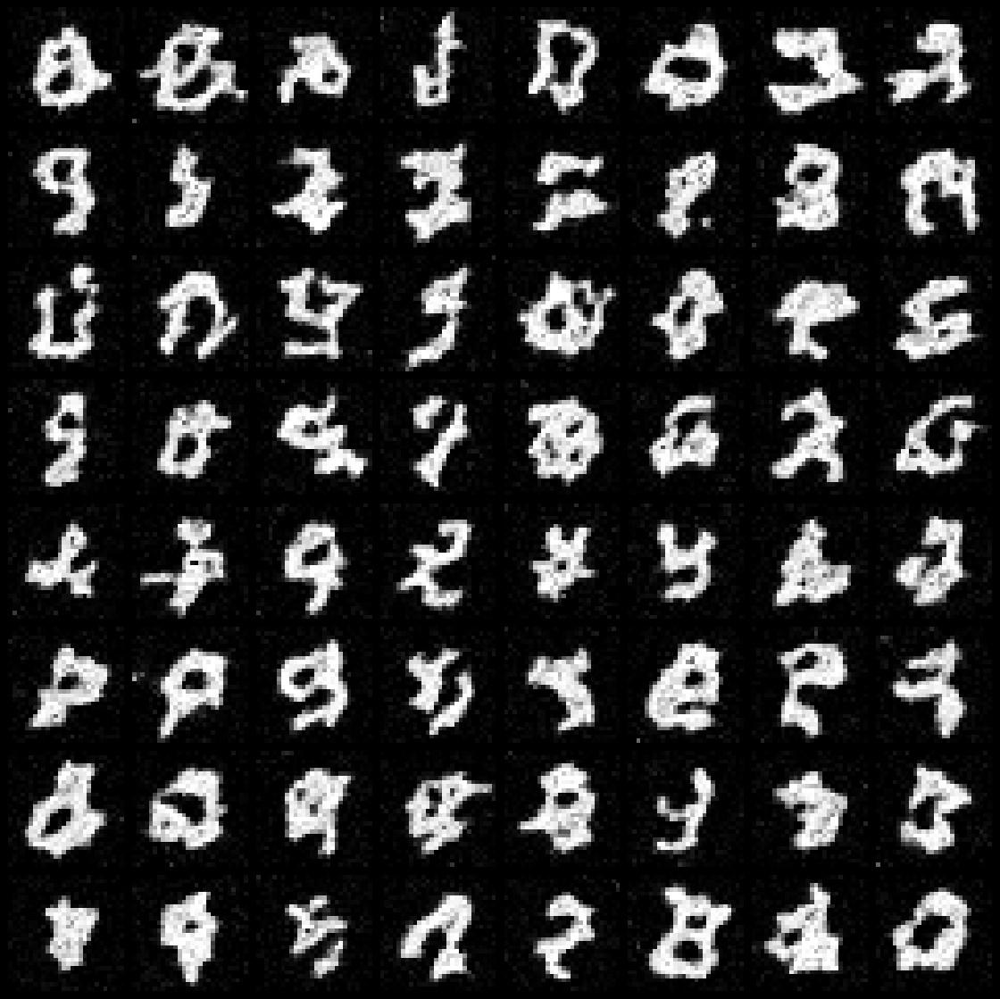
Evolution of iterative denoising for fixed noise seeds over training. The trajectories
transition from unstable, noisy shapes to stable, high-quality digits as the time-conditioned
UNet converges.
2.4–2.5 Class-Conditioned Flow Matching UNet
The final model augments the time-conditioned UNet with an additional conditioning branch for the
digit label. Each class index is converted into a one-hot vector, embedded with fully connected
blocks, and injected alongside the time embedding at the bottleneck and early decoder layers.
During training, the class signal is randomly dropped for a fraction of the batches so that the
network learns both unconditional and class-guided flows. Using a hidden width of 64 channels,
batch size 64, learning rate 0.01 with exponential decay, and training for 10 epochs on a GPU
produces rapid convergence of the class-conditioned flow field.
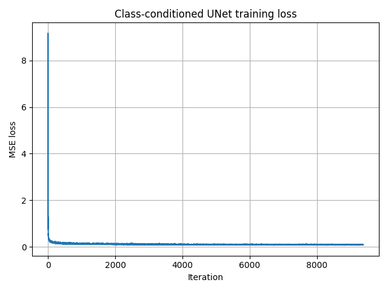
Training loss for the class-conditioned UNet over 10 epochs. The loss drops sharply within the
first few hundred updates and then flattens into a low plateau, indicating that adding label
conditioning helps the model fit the flow field efficiently while remaining numerically stable.
Sampling now starts from pure noise together with a requested digit label and uses
classifier-free guidance to steer samples toward that class. The grids below show four instances
of each digit for epochs 1, 5, and 10 using the same guidance strength and sampling schedule.
After a single epoch, the digits are only loosely tied to their labels: many strokes are broken,
shapes are fuzzy, and some columns contain off-class artifacts. By epoch 5, each row forms
clean, correctly ordered digits zero through nine with recognizable handwriting structure and
consistent stroke thickness. After epoch 10, the digits sharpen further while preserving
class identity, with backgrounds remaining dark and artifacts largely removed. Compared with the
time-only model, label conditioning clearly accelerates convergence and produces better aligned,
class-consistent samples for the same number of epochs.
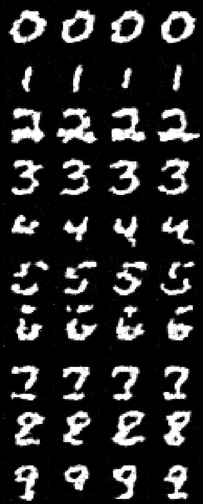
Epoch 1 samples
Epoch 5 samples
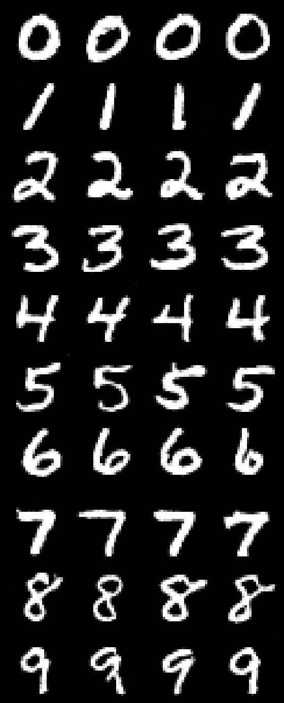
Epoch 10 samples
Evolution of class-conditioned samples across training. Early in training, the outputs only
roughly respect the target labels, while after 5–10 epochs each row displays sharp, clean
digits zero through nine with minimal off-class artifacts, illustrating the benefit of
conditioning on digit identity.
The training gif demonstrates how class conditioning sculpts the digit manifold over
time. For a fixed grid of noise seeds and target labels, early frames show unstable, flickering
shapes that occasionally jump between classes. As optimization proceeds, trajectories settle into
stable attractors: each seed consistently produces the same digit, strokes become crisp, and
only small stylistic variations remain from frame to frame. This behavior matches the loss curve:
once the coarse, label-aware flow has been learned, the remaining epochs mainly refine local
stroke geometry and contrast while preserving global class structure.
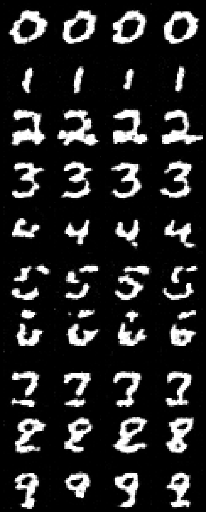
Animated class-conditioned sampling over epochs. Fixed noise seeds and labels evolve from
noisy, unstable glyphs into stable, high-quality digits, demonstrating how the learned
class-aware flow gradually carves out the MNIST digit manifold from pure noise.
2.6 Class-Conditioned UNet without a Learning Rate Scheduler
This ablation examines whether the exponential learning rate scheduler is essential for the
convergence behavior of the class-conditioned flow model. The scheduler is removed and replaced
with a fixed learning rate chosen to approximate the effective average rate of the decayed
schedule. In practice, a constant step size of 0.003 preserves training stability and aligns with
the typical optimization dynamics of the original configuration.
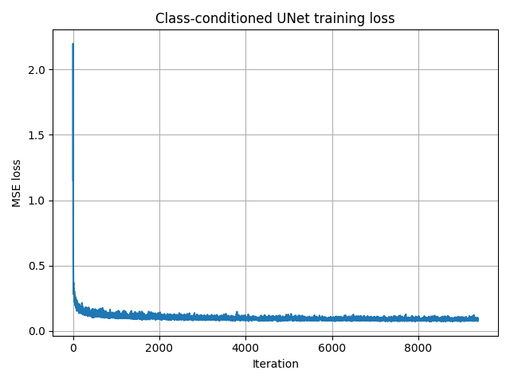
Training loss for the class-conditioned UNet trained for 10 epochs with a constant learning
rate. The curve closely matches the scheduler-trained behavior, confirming that exponential
decay is not necessary for stability or convergence.
Four samples of each digit are generated from pure
noise at epochs 1, 5, and 10. After a single epoch, the digits are fragmentary and only
loosely aligned with labels. By epoch 5, the rows settle into clean, class-consistent
structure, and by epoch 10 the digits sharpen further, exhibiting nearly identical fidelity
to the scheduler-trained counterpart. This confirms that classifier-free guidance combined with
label conditioning largely determines the convergence profile, while the learning rate schedule
plays only a secondary role.
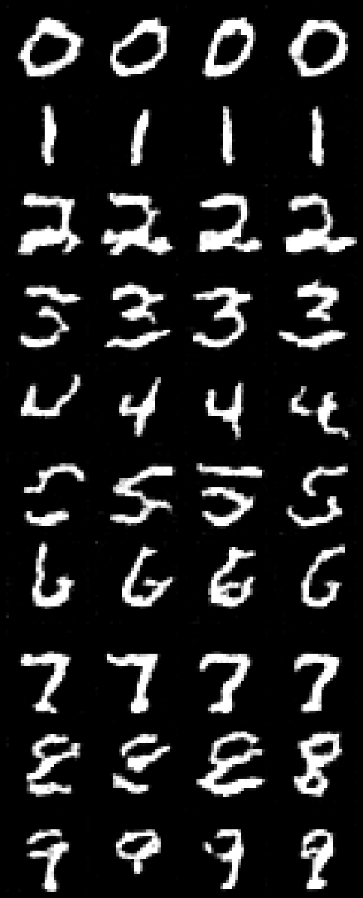
Epoch 1 samples
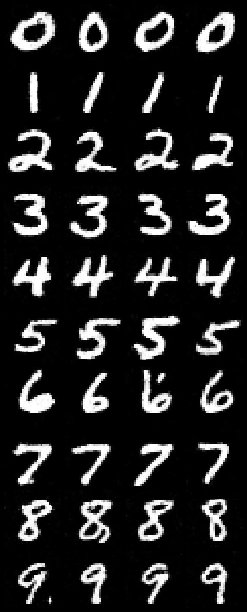
Epoch 5 samples
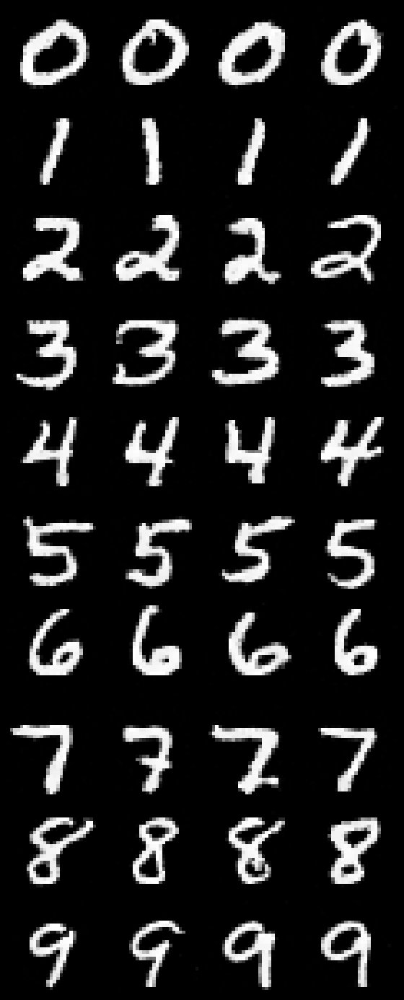
Epoch 10 samples
Samples from the class-conditioned UNet trained without a scheduler. The progression from
unstable early digits to sharp, label-accurate structures parallels the scheduler-trained
model, demonstrating that constant-step optimization reaches similar sample quality.
The training animation corroborates these findings. With a constant learning rate, trajectories
associated with fixed noise seeds evolve smoothly from ambiguous glyphs into stable,
class-correct digits. Motion is slightly less abrupt in the earliest epochs compared to the
scheduler-based run, but the long-term attractor structure is effectively unchanged. It's clearly evident, that
the scheduler can
be removed without degrading the expressive or generative behavior of the learned flow.
With scheduler
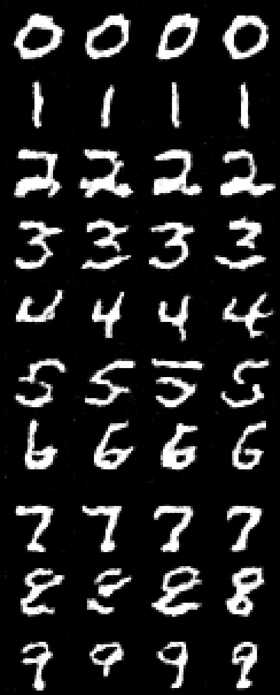
No scheduler
Comparison of training dynamics for scheduler and no-scheduler regimes. Both models converge to
stable, high-fidelity digit manifolds, with nearly indistinguishable trajectories after the
early epochs.